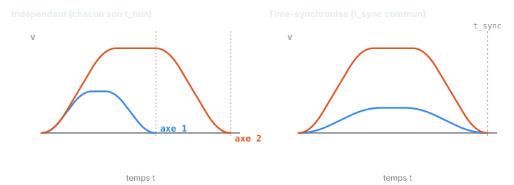
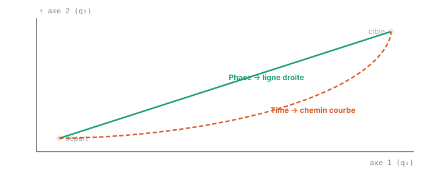

Chapitre 07
Multi-axes & synchronisation
Objectifs du chapitre
- Comprendre pourquoi plusieurs axes indépendants finissent leur mouvement à des instants différents.
- Maîtriser la synchronisation temporelle (Time) : une durée commune t_sync, obtenue par re-cadencement de tous les axes.
- Distinguer la synchronisation de phase (Phase) — mouvement en ligne droite dans l'espace articulaire — de la simple synchro temporelle.
- Connaître les modes de synchronisation offerts par ruckig-scl (SYNC_TIME, Phase, No, per-DoF, TimeIfNecessary, Discrete).
1. Le problème multi-axes
Jusqu'ici nous avons résolu la trajectoire d'un seul axe. Un robot ou une machine en pilote plusieurs — dans ruckig-scl, jusqu'à 4 degrés de liberté (DoF). Chaque axe possède ses propres limites (vₘₐₓ, aₘₐₓ, jₘₐₓ) et son propre déplacement à parcourir. Le Step 1 (chapitre 5) donne pour chaque axe d sa durée temps-optimale t_min,d.
Or ces durées n'ont aucune raison d'être égales : un axe qui parcourt un grand angle mettra plus longtemps qu'un axe qui bouge à peine. Sans coordination, chaque axe atteint sa cible à un instant différent — le mouvement d'ensemble semble désordonné, et le chemin suivi dans l'espace articulaire est imprévisible.

2. Synchronisation temporelle (Time)
C'est le mode par défaut. L'idée : imposer à tous les axes une durée commune t_sync, puis re-cadencer chaque axe pour qu'il consomme exactement cette durée. On applique alors à chaque axe le Step 2 (chapitre 6), qui recalcule un profil limité en jerk s'exécutant en une durée imposée.
La durée commune ne peut évidemment pas être plus courte que le plus lent des axes : celui-ci est déjà à son temps-optimal et ne peut pas aller plus vite. On l'appelle l'axe limitant, et c'est lui qui fixe t_sync. Tous les autres, plus rapides, sont ralentis jusqu'à cette durée — c'est ce que montre le panneau droit de la figure 7.1 : l'axe 1, qui finissait tôt, adopte un profil plus doux et arrive désormais en même temps que l'axe 2.
Un détail crucial vient du Step 2 : rappelons qu'un axe possède des intervalles de durée bloqués (chapitre 5) — des durées irréalisables pour ses limites de jerk. La durée commune doit donc être valide pour tous les axes à la fois : on prend le maximum des t_min, mais en évitant les intervalles bloqués de chaque axe.
∑ La durée de synchronisation satisfait :
On part de max_d(t_min,d) ; si cette valeur tombe dans un intervalle bloqué d'un axe, on l'augmente jusqu'à la première durée réalisable par tous les axes. Chaque axe est ensuite re-cadencé à ce t_sync par le Step 2.
💡 Intuition : synchroniser, c'est ralentir les axes rapides pour attendre le plus lent — jamais accélérer le plus lent au-delà de son temps-optimal. L'axe limitant donne le tempo ; les autres s'alignent sur lui.
3. Synchronisation de phase (Phase)
La synchro temporelle garantit que tous les axes arrivent ensemble, mais pas qu'ils suivent la même forme de mouvement : entre le départ et l'arrivée, le chemin dans l'espace articulaire peut se courber. Pour certaines applications — chemins prévisibles, absence de dépassement de trajectoire — on préfère un mouvement en ligne droite dans l'espace articulaire.
C'est possible lorsque les déplacements de tous les axes sont colinéaires : leurs vecteurs d'écart d'état pointent dans la même direction (à un facteur d'échelle près). Dans ce cas, tous les axes suivent le même profil temporel — celui de l'axe limitant — simplement mis à l'échelle par le ratio de déplacement de chaque axe. Comme leurs positions restent proportionnelles à chaque instant, la trajectoire résultante est une droite.

Concrètement, chaque axe reçoit le timing de l'axe limitant, et son jerk est mis à l'échelle par le ratio de son déplacement à celui de l'axe limitant. Les profils sont ainsi des copies homothétiques : mêmes instants de commutation, amplitudes proportionnelles.
Si la condition de colinéarité n'est pas remplie — les axes doivent partir dans des directions incompatibles — la phase est impossible et Ruckig se replie automatiquement sur la synchro Time. On ne perd donc jamais l'arrivée simultanée ; on renonce seulement à la ligne droite.
4. Pas de synchronisation, et les autres modes
Le mode No renonce à toute coordination : chaque axe court à son propre t_min, indépendamment des autres. La durée de la trajectoire globale vaut alors simplement le max des durées d'axe, mais les axes rapides atteignent leur cible en avance et y restent immobiles en attendant les autres.
Ruckig propose encore quelques variantes :
- per-DoF — chaque axe se voit attribuer son propre mode de synchronisation, au lieu d'un mode global unique.
- TimeIfNecessary — synchronisation temporelle appliquée seulement si la cible bouge ; un axe déjà à destination n'impose rien.
- Discrete — t_sync est arrondi au multiple supérieur du temps de cycle, pour caler les arrivées sur la grille temporelle de l'automate.
⏱️ La synchronisation ne coûte pas d'itération : une fois t_sync déterminé, chaque axe est traité par le Step 2 en forme fermée. Le surcoût par cycle reste borné et proportionnel au nombre de DoF (≤ 4) — parfaitement compatible avec un cycle temps réel.
🔧 Dans ruckig-scl, la FC Synchronize calcule la durée commune t_sync ≥ max(t_min) en évitant les intervalles bloqués de chaque axe (d'où le Block introduit au chapitre 5), puis re-cadence chaque axe par le Step 2. La FC PhaseSynchronize gère la synchro « Phase » : elle teste la colinéarité des écarts d'état par axe ; si colinéaires, chaque axe suit le timing de l'axe limitant avec le jerk mis à l'échelle par le ratio de déplacement (mouvement en ligne droite dans l'espace articulaire) ; sinon elle se replie sur Time.
Les modes sont des constantes INT dans le DB dbRuckigConst : SYNC_TIME (défaut, tous arrivent ensemble), Phase, No (chaque axe indépendant à son t_min), plus per-DoF (chaque axe son propre mode), TimeIfNecessary (synchronisé seulement si la cible bouge) et Discrete (t_sync arrondi au multiple supérieur de cycleTime). Le tout est limité à 4 DoF.
Récapitulatif
- Plusieurs axes (≤ 4 DoF) ont chacun leur t_min : sans coordination, ils finissent à des instants différents.
- Time (défaut) : durée commune t_sync = max_d(t_min,d), choisie hors des intervalles bloqués de tous les axes, puis Step 2 sur chaque axe → arrivée simultanée. L'axe limitant impose le tempo.
- Phase : si les déplacements sont colinéaires, tous les axes suivent le profil de l'axe limitant, jerk mis à l'échelle par le ratio de déplacement → ligne droite dans l'espace articulaire. Sinon, repli sur Time.
- No : chaque axe à son t_min, durée globale = le max. Variantes : per-DoF, TimeIfNecessary, Discrete.
- Principe : synchroniser = ralentir les rapides, jamais forcer le plus lent au-delà de son temps-optimal.
- Dans
ruckig-scl:Synchronize,PhaseSynchronize, constantes dansdbRuckigConst.